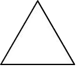
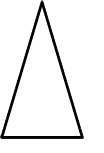
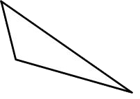
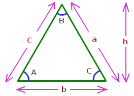

TRIANGLE FORMULA:
A triangle is a polygon with three edges and three vertices. It is one of the
basic shapes in geometry. A triangle with vertices A, B, and C.The length of the
sides of a triangle may be same or different. If all the 3 sides of a triangle
are equal then it is an equilateral triangle. If 2 sides of a triangle are
equal, it is an isosceles triangle.
TYPES OF TRIANGLES:
Equilateral Triangles:

The Equilateral Triangles have the following properties (in addition to the
properties above for all triangles):
Three straight sides of equal length.
Three angles, all equal to 60°
Three lines of symmetry
Isosceles Triangles:

The Isosceles Triangles have the following properties:
Two sides of equal length
Two equal angles
One line of symmetry
Scalene Triangles:

Scalene triangles have the following properties
No sides of equal length
No equal angles
No lines of symmetry
Acute triangles:
Acute triangles have all acute angles (angles less than 90°). It is possible
to have an acute triangle which is also an isosceles triangle – these are called
acute isosceles triangles.
Right Triangles:
The Right Triangles (right-angled triangles) have one right angle (equal to
90°).It is possible to have a right isosceles triangle – a triangle with a right
angle and two equal sides.
Obtuse triangles:
Obtuse triangles have one obtuse angle (angle which is greater than 90°). It is
possible to have a obtuse isosceles triangle – a triangle with an obtuse angle
and two equal sides.
The Triangle Formula are given below as,
Triangle Formula:

Perimeter of a triangle = a + b + c
Area of a triangle=1/2bh
Where,
b is the base of the triangle.
h is the height of the triangle.
If only 2 sides and an internal angle is given then the remaining sides and
angles can be calculated using the below formula:
a/sinA = b/sinB = c/sinC